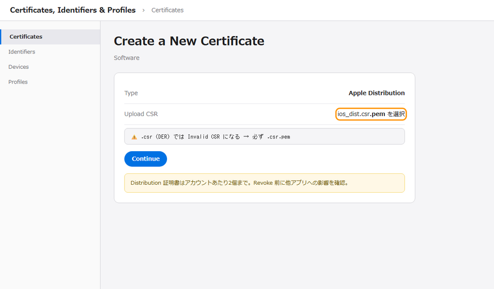
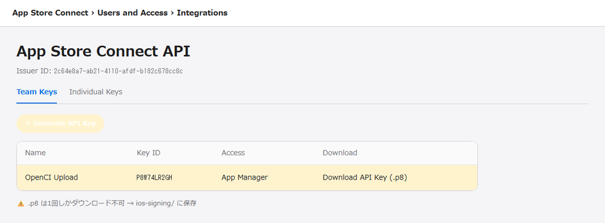
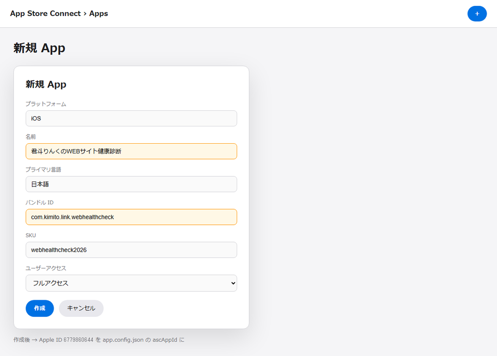
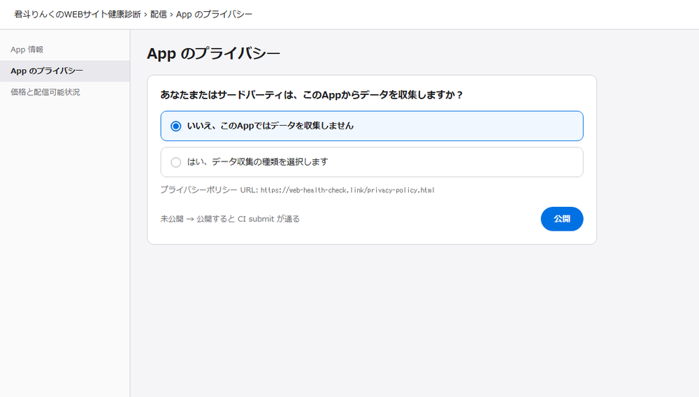
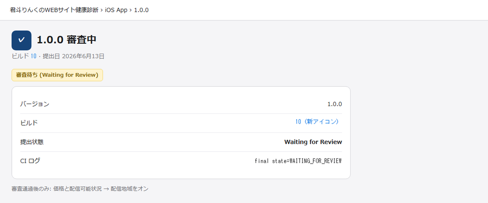

りんく・こん太・たぬ姉が、上から ① → ② → ③ … の順で案内するよ。
Mac 不要。Windows + GitHub Actions でビルド〜審査提出までキットが肩代わり。

iOS は Android より初回だけ手順が多いけど、2回目以降は push するだけだよ。①〜③ を終えれば、あとはキット任せ。

Mac は要らねえ。GitHub Actions の mac ランナーがビルドする。人間は Apple の Web 画面だけ触ればいい。

アプリ名・Bundle ID はconfig をコピペ。RH なら app.config.reverse-hack.json、kimito なら app.config.json よ。
com.reversehack.webhealth ／ kimito: com.kimito.link.webhealthcheck何もしなくてOK。人間は ① から始めてね。

Capacitor iOS ビルド・スクショ30枚・説明文・Review Notes・審査提出・配信地域175か国まで、ios-appstore-release.yml が自動でやるよ。
generate-app-icon-reverse-hack.mjs）WAITING_FOR_REVIEW まで）appstore-submit.mjs の [7g]フルビルドなしで全世界配信だけ設定する軽量ジョブ:
asc-set-availability → brand を選んで Runnpm run asc:set-availability:reverse-hack（ASC API キー要）成功ログ: worldwide availability OK (175/175 territories, JPN=yes)
ios-appstore-release → brand = reverse-hack を選ぶ。Secret IOS_APPSTORE_PROFILE_RH_BASE64 が別途必要。Apple Developer で配布証明書を作り、App Store Connect の API キーを発行して、GitHub Secrets に7個登録する。
pwsh scripts/create-ios-csr.ps1 → CSR と秘密鍵（リポのルートで）.csr.pem をアップロード）ios-signing/ に保存pwsh scripts/prepare-openci-ios-secrets.ps1 → GitHub Secrets 7個を登録
.csr.pem だ。.csr だけだと Apple が「Invalid CSR」で弾く。実際に踏んだぞ。

RH 用プロファイルは Bundle ID com.reversehack.webhealth で別途作って、Secret 名は IOS_APPSTORE_PROFILE_RH_BASE64 よ。kimito 用と混同しないで。
↓ この画面はApple Developer › 証明書（Distribution を作成）:
https://developer.apple.com/account/resources/certificates/list

ios_dist.csr.pem↓ この画面はApp Store Connect API キー（Team Keys）:
https://appstoreconnect.apple.com/access/integrations/api

| Secret 名 | 内容 |
|---|---|
IOS_DIST_CERT_P12_BASE64 | 配布証明書（P12） |
IOS_DIST_CERT_PASSWORD | P12 パスワード |
IOS_APPSTORE_PROFILE_BASE64 | kimito 用プロファイル |
IOS_APPSTORE_PROFILE_RH_BASE64 | RH 用プロファイル（別途） |
APPLE_TEAM_ID | 例: 8922HQ842P |
APPSTORE_CONNECT_KEY_ID | API キー ID |
APPSTORE_CONNECT_ISSUER_ID | Issuer ID |
APPSTORE_CONNECT_API_KEY_P8_BASE64 | .p8 を base64 |
Bundle ID を Developer に登録 → App Store Connect で「新規 App」→ URL の数字を ascAppId に書く。
stores.ascAppId に記入Bundle ID は完全一致が必要。RH なら com.reversehack.webhealth。Bootstrap コマンドで API から自動取得もできるよ。
記入後は npm run mobile:bootstrap:reverse-hack で config に書き込めるわ。手で書いてもOK。
↓ この画面はApp Store Connect › 新規 App:
https://appstoreconnect.apple.com/apps → 右上 ＋

displayName、Bundle ID = config と完全一致。SKU は任意| 項目 | RH 例 | kimito 例 |
|---|---|---|
| 名前 | リバースハック WEB健康診断 | 君斗りんくのWEBサイト健康診断 |
| Bundle ID | com.reversehack.webhealth | com.kimito.link.webhealthcheck |
| ascAppId | 6780161483（実証） | 6779860644（済） |
「いいえ、このAppではデータを収集しません」→ プライバシーポリシー URL を貼る → 公開。
ここ忘れると CI が STATE_ERROR.APP_DATA_USAGES_REQUIRED で409 止まりだ。Play の広告 ID 未申告と同じくらい厄介だぞ。
1回設定すれば以降の push は全部通るわ。RH の URL は partner…/privacy よ。
↓ この画面はApp のプライバシー。kimito 実証 URL:
…/apps/6779860644/distribution/privacyRH: ② で作った ascAppId に置き換え（…/apps/【数字】/distribution/privacy）

/v1/appDataUsages は 404（2026-06 時点）。人間が Web 画面で1回だけ設定する必要がある。ios-appstore-release.yml — RH は brand=reverse-hackmain に push するか、GitHub Actions から workflow を手動実行。ASC で「審査待ち」を確認。
ios-appstore-releasefinal state=WAITING_FOR_REVIEW と availability applied: 175 territories（または [7g] OK）アイコンを変えたいときは release-assets/…/app-icon-1024.png（1024px マスター）をコミットして push するだけ。CI が全サイズ生成してくれるよ。512px を 1024 に上書きしないよう注意（RH 実証で CI が落ちた罠）。
↓ ④ のゴールは審査待ちのこの画面。kimito 実証:
…/apps/6779860644/distribution/ios/version/inflightRH: ascAppId に置き換え

asc-set-availability / submit [7g] — 175か国・日本含む基本は何もしなくてOK。④ の CI が全世界配信を設定する。念のため ASC の価格画面で 175 か国を目視確認する程度。
API だけの提出だと「配信地域 0」のまま審査通過 → DL 不可、が起きうるから、キットは POST /v2/appAvailabilities で175/175 自動適用するよ（2026-06 実証済み）。
appstore-submit.mjs の [7g] が自動実行（追加操作不要）asc-set-availability → brand 選択 → Runnpm run asc:set-availability:reverse-hack または :kimito昔は審査通過後に人間が ASC で国を選んでた。今は API で先に全世界を入れられる。審査中でも OK だ。
審査通過を待たなくていいの。ただし反映に数時間かかることはあるから、DL できないときは つまずいたら も見てね。
↓ 任意の目視確認は価格と配信可能状況。kimito 実証:
…/apps/6779860644/distribution/pricingRH 実証: …/apps/6780161483/distribution/pricing
175/175 territories が出ていれば、手で国を選ぶ作業は不要。迷ったら、今の Step のたぬ姉の URLを開いて、同じ画面か確認しろ。
| 症状 | 対処 |
|---|---|
| Invalid CSR | ① → .csr.pem をアップロード（.csr だけは NG） |
| CI submit が 409 | ③ → App Privacy を公開まで |
| RH で profile エラー | ① → IOS_APPSTORE_PROFILE_RH_BASE64 を登録 |
| ascAppId 未設定 | ② → 枠作成 → config に数字を記入 |
| 審査通過なのに DL 不可 | ⑤ → asc-set-availability を再実行 → ASC 価格画面で確認（最大24h） |
| CI アイコン 75KB エラー | 1024px マスター（release-assets/…/app-icon-1024.png）を使う。512px で上書きしない |
| 配信地域 API 403 | GET /v2/appAvailabilities?filter[app]= は禁止。キットは appAvailabilityV2 経路を使う（2026-06 修正済み） |
Android 版は Play 追体験 だ。RH は Android 審査中だから、iOS も同じ ①〜④ で並行できるよ！
詳細コマンドは _docs/ios-human-tasks.md と _docs/reverse-hack-mobile-runbook.md だ。
上から ① → ② → … と進めなさい。それでは、ゆっくりしていってね。